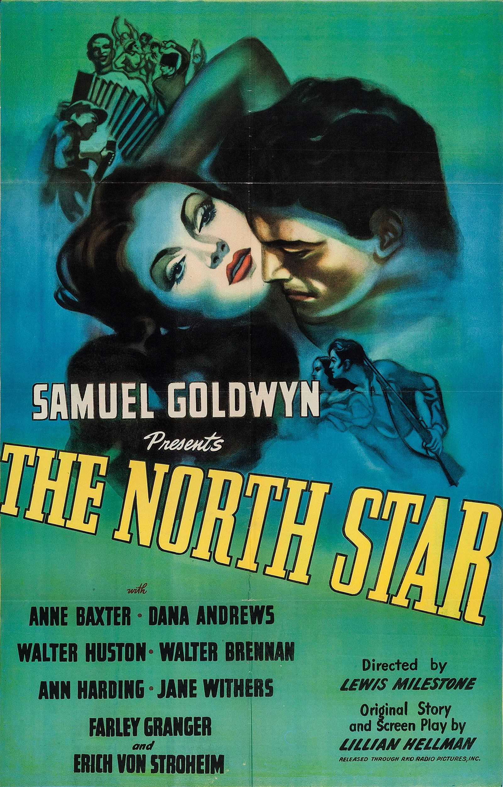

The North Star
16th Academy Awards
(Oscars 1944)
6 Nominations, 0 Awards
| Nominations | ||
|---|---|---|
| Category | Nominees | Result |
| Writing (Original Screenplay) | Lillian Hellman | Nominated |
| Cinematography (Black-and-White) | James Wong Howe | Nominated |
| Art Direction (Black-and-White) | Howard Bristol and Perry Ferguson | Nominated |
| Special Effects | Clarence Slifer, R. O. Binger, and Thomas T. Moulton | Nominated |
| Sound Recording | Thomas T. Moulton | Nominated |
| Music (Music Score of a Dramatic or Comedy Picture) | Aaron Copland | Nominated |